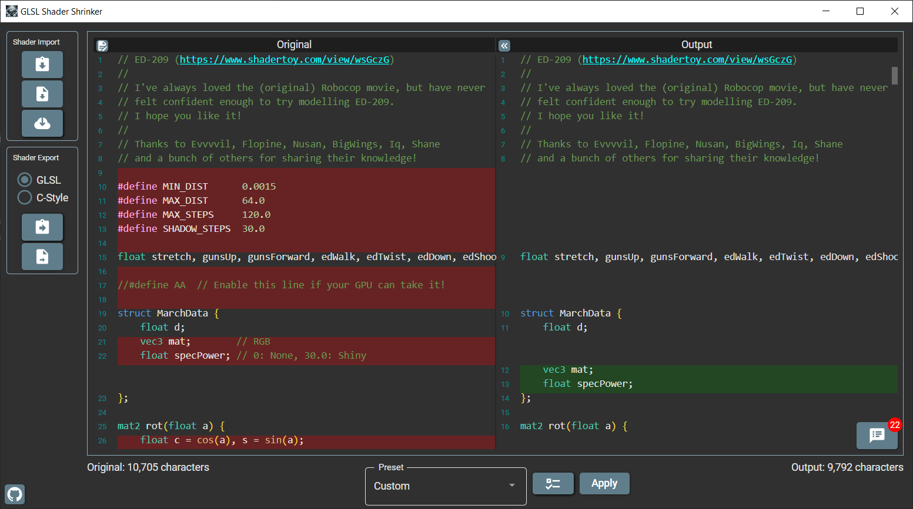

I have written many GLSL shaders over the last few years, most of which can be found on the Shadertoy website, and over time I’ve built up some code which I use as a ‘starting point’ for ray-marched scenes.
After writing a shader I then review the code to delete any unused functions, simplify calculations, and optimize performance, and generally get things into a state where I don’t mind people taking a look.
It occurred to me that much of this process can be automated, so I wrote a Windows tool which does just that:

The C# source (and prebuilt Windows installer) can be found on GitHub at this location:
https://github.com/deanthecoder/GLSLShaderShrinker
See here for a full list of features.